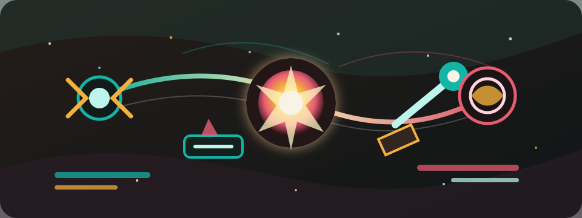

Codex Game Operator
星核工坊
- 能量
- 0
- 每秒
- 0
- 每次
- 1
- 过载
- +5
目标
购买第一次升级
进度 0 次升级 / 1 次升级 · 还差 10 能量购买聚能透镜

下一击 +1 · 再 8 次过载 +5
连击 0
稳定
指令轮换：累计 100K 能量后解锁 90 秒连携目标 · 解锁后先从非契合指令起手，第二步继续避开契合指令，把契合指令留到 3/3 策略终结；按推荐预案执行会获得预案执行奖励；完成轮换会累积指令熟练，满层后用回响续航触发满层回响。
航线委托：累计 100K 能量后解锁 3 步短期任务
远航调度：累计 20M 能量后解锁后半段航段调度、目标指令推荐、目标冷却缩短、连携窗口延长、远航续航、远航协同与闭环奖励
闭环进度 0/3 · 20M 后解锁